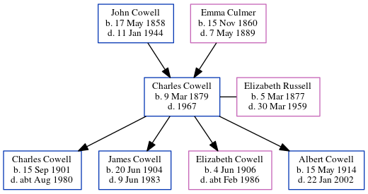

Charles Percy Cowell 1879 - 1967
[ Home ] | [ Calendar ] | [ Surnames Index ] | [ Errors ] | [ Family History ]A newsagent and cowman and the child of John Cowell (a farm waggoner) and Emma Culmer, Charles Cowell, the great-uncle of Nigel Horne, was born in Westbere, Kent, England on 9 Mar 18791,2,3,4,5,6, was baptised there at All Saints on 4 May 1879 and married Elizabeth Russell (with whom he had 4 children: Charles John, James Henry Norman, Elizabeth Emma and Albert Percy) at All Saints Church, Birchington, Kent, England on 29 Oct 19018.
During his life, he was living in Wayborough, Minster, Thanet, Kent on 3 Apr 18811; in Upstreet, Kent, England on 5 Apr 189110; at 2 Woodchurch Farm Cottages, Acol, Kent on 31 Mar 190112 - less than a mile from his father John Cowell who was living at 2 Woodchurch Farm Cottages, Acol, Kent; at Streele Cottages, Billingshurst, West Sussex, England on 2 Apr 19119; at Full Cottages, Highfield Road, Bognor, Westhampnett, Sussex, England in 19214; at Full Cottages, Highfield Road, Westhampnett, West Sussex on 19 Jun 19214; and on Saint Stephen, Murina Avenue, Bognor Regis, West Sussex on 29 Sept 19395. In 1921 he was working at A T Collgar Farmer at -, -.
He died in 1967 in Portsmouth, Hampshire, England7.
Parents
- John was born on 17 May 1858
- Emma was born on 15 Nov 1860
Children
- Charles John was born on 15 Sept 1901
- James Henry Norman was born on 20 Jun 1904
- Elizabeth Emma was born on 4 Jun 1906
- Albert Percy was born on 15 May 1914
Citations
- 1881 England Census Online publication - Provo, UT, USA: The Generations Network, Inc., 2004. 1881 British Isles Census Index provided by The Church of Jesus Christ of Latter-day Saints © Copyright 1999 Intellectual Reserve, Inc. All rights reserved. All use is subject to the
- 1891 England Census Online publication - Provo, UT, USA: The Generations Network, Inc., 2005.Original data - Census Returns of England and Wales, 1891. Kew, Surrey, England: The National Archives of the UK (TNA): Public Record Office (PRO), 1891. Data imaged from The National
- 1911 England Census Online publication - Provo, UT, USA: Ancestry.com Operations, Inc., 2011.Original data - Census Returns of England and Wales, 1911. Kew, Surrey, England: The National Archives of the UK (TNA), 1911. Data imaged from the National Archives, London, England.
- 1921 Census Of England & Wales - Findmypast (was age 42 and the head of the household)
- 1939 Register - Findmypast (was recorded at this address)
- England & Wales, FreeBMD Birth Index, 1837-1915 Online publication - Provo, UT, USA: The Generations Network, Inc., 2006.Original data - General Register Office. England and Wales Civil Registration Indexes. London, England: General Register Office. © Crown copyright. Published by permission of the Cont
- England & Wales, Death Index: 1984-2005 Online publication - Provo, UT, USA: The Generations Network, Inc., 2007.Original data - General Register Office. England and Wales Civil Registration Indexes. London, England: General Register Office. © Crown copyright. Published by permission of the Cont
- England & Wales, FreeBMD Marriage Index: 1837-1915 Online publication - Provo, UT, USA: The Generations Network, Inc., 2006.Original data - General Register Office. England and Wales Civil Registration Indexes. London, England: General Register Office. © Crown copyright. Published by permission of the Cont
- 1911 Census for England & Wales - Findmypast (was age 32 and the head of the household)
- 1891 England, Wales & Scotland Census - Findmypast (was age 12 and the son of the head of the household)
- 1881 England, Wales & Scotland Census - Findmypast (was age 2 and the son of the head of the household)
- 1901 England, Wales & Scotland Census - Findmypast (was age 22 and the son of the head of the household)
Media
Charles Percy Cowell - 3

Chichester Observer 30 January 1935

Charles Percy Cowell - Elizabeth Ellen Russell

Bognor Post - 3 Nov 1951

Charles Percy Cowell

Charles Percy Cowell - 2

Bognor Regis Observer - 27 Nov 1943

Charles Percy Cowell
England & Wales births 1837-2006 - BMD/B/1879/2/AZ/000124/319
England & Wales marriages 1837-2008 - BMD/M/1901/4/AZ/000083/293
Canterbury Marriages - GBPRS/CANT/M/97056079/1
Canterbury Marriage Banns - GBPRS/CANT/M/94074833/1
Canterbury Marriages - GBPRS/CANT/M/97056079/2
1939 Register Transcription - TNA-R39-2577-2577A-011-37
England & Wales deaths 1837-2007 - BMD/D/1967/4/AZ/000207/128
Canterbury Baptisms Transcription - GBPRS-CANT-B-96749221
1911 Census for England & Wales - GBC/1911/RG14/05302/0043/1
1881 England, Wales & Scotland Census - GBC/1881/0004825236
1939 Register - TNA/R39/2577/2577A/011/36
1901 England, Wales & Scotland Census Transcription - GBC-1901-0005520260
England Births & Baptisms 1538-1975 - R_884817321
Family Tree
Map
Generated by ged2site. Last updated on Jul 3, 2024
Known Issues
May have been living with mother on 3 Apr 1881, but the addresses don't match or aren't detailed enough to be sure
May have been living with father on 3 Apr 1881, but the addresses don't match or aren't detailed enough to be sure
May have been living with father on 5 Apr 1891, but the addresses don't match or aren't detailed enough to be sure
Removing leading 0 from residence date '02 Apr 1911'
Country not included in country, or misspelt country '-'